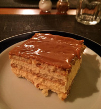

Pavê
Ingredientes
- 1 lata de leite condensado
- 1 litro de leite
- 4 colheres (sopa) de amido de milho
- 2 ovos separados
- 2 caixas de chocolate Bis picado
- 1 xícara de açúcar
- 1 lata de creme de leite
Modo de preparo
- Misture o leite condensado, o leite, a maisena, as gemas e leve ao fogo.
- Mexa sempre até engrossar e reserve.
- Forre o fundo de uma forma refratária grande com metade do creme.
- Forme uma camada com o chocolate picado e complete com o restante do creme.
- Bata as claras em neve e acrescente o açúcar, aos poucos, batendo sempre, até obter um suspiro firme.
- Junte o creme de leite e mexa bem.
- Coloque essa mistura por cima do creme e leve à geladeira até a hora de servir.